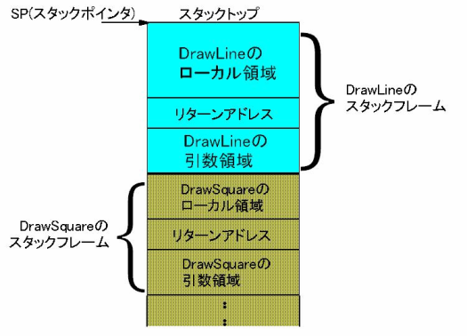

a[1:3] returns elements at indices 1 and 2 A list comprehension builds a new list: [x for x in xs if cond] sum() adds a list; sorted() returns a new sorted list sorted(reverse=True) orders descending Slicing creates a new list
a = [1,2,3,4,5,6]
pare = [x for x in a if x % 2 == 0]
print(pare) # [2,4,6]